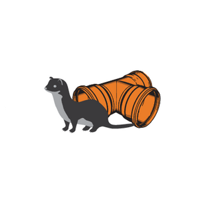
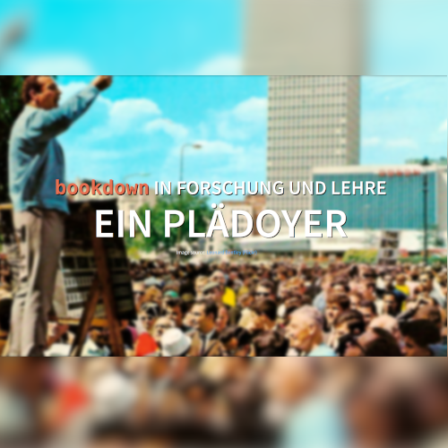

Here are some highlights of the projects I’ve worked in so far. It’s a mix of private projects, teaching, and research I’ve done within my employment at ZHAW. Hover over a card for more details, click to learn even more!
Evaluating Weasel Detections
To determine the success of a weasel conservation project, I analyzed weasel detections and sightings.
Forecasting Wildlife-Vehicle Collisions
Based on numerous years of collecting incidents of wildlife-vehicle collisions, we created three different models to forecast such collisions for areas where no collision data is available.
Spatial R for ArcGIS Users
An introduction to doing spatial analysis in R, targeted for people coming with an ArcGIS background.
Spatial Python for Bachelor Students
In the bachelor course Applied Geoinformatics (ZHAW), I teach geospatial analysis in python.
In the masters course Research Methods I teach data processing, visualization and analysis of spatial and non-spatial data.
Spatial R for Master Students
In the masters course Computational Movement Analysis I teach processing, visualization and analysis of movement data.

Detecting Microhabitats with LiDAR
Together with a bachelor student, we developed a simple method to detect microhabitats (i.e. wood piles) with countrywide available LiDAR data.

Detecting Weasels with "TubeCam"
I initiated and lead a research project to develop a novel method to detect weasels Mustela erminea and least weasels Mustela nivalis
How open are our cantons?
I use the restAPI from geodienste.ch to determine how open the individual cantons are with their geodata on said portal.
ArcGIS vs QGIS for Education
In this blogpost, I'm making a case for using QGIS (and FOSS in general) when teaching geospatial on a bachelor and master level.

Making a Case for Literate Programming
In this talk I'm making a case for using literate programming tools (e.g. rmarkdown / bookdown) in research and teaching.

Geospatial Analysis in the Cloud
These are the slides to a quick introduction I give to bachelor students to introduce them to the possibilities of doing large scale geospatial analysis in the cloud.